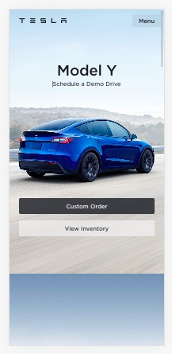
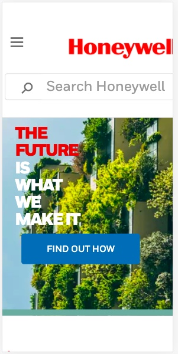
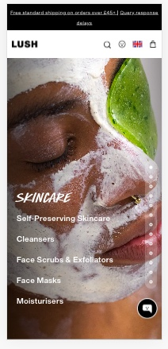

Visual Hierarchy
Tesla
The principle of visual Hierarchy is used here as the first thing users will see is the model of the car or Model Y. This is the biggest size text on the page which draws the attention there first. By using visual hierarchy, a designer can make a user see or read a specific element on a page before anything else.
PARC Alignment
Honeywell
The use of alignment of text on Honeywell's website. Aligning text creates a sense of cohesiveness. This example has the text 'the future is what we make it' left aligned. The user can see this all at once. There is also an image that is right aligned opposite to the text.
PARC Contrast
Lush Cosmetics
The use of contrast on Lush Cosmetic's website. Contrast can be used with text, colors, and images. Different fonts can be mixed to create a mix n match style. This site uses a sans serif handwritten font to as a heading to stand out against the smaller sub heading font. The site also uses a picture of a womens face with darker complexion using a face mask that is white to create contrast as well.